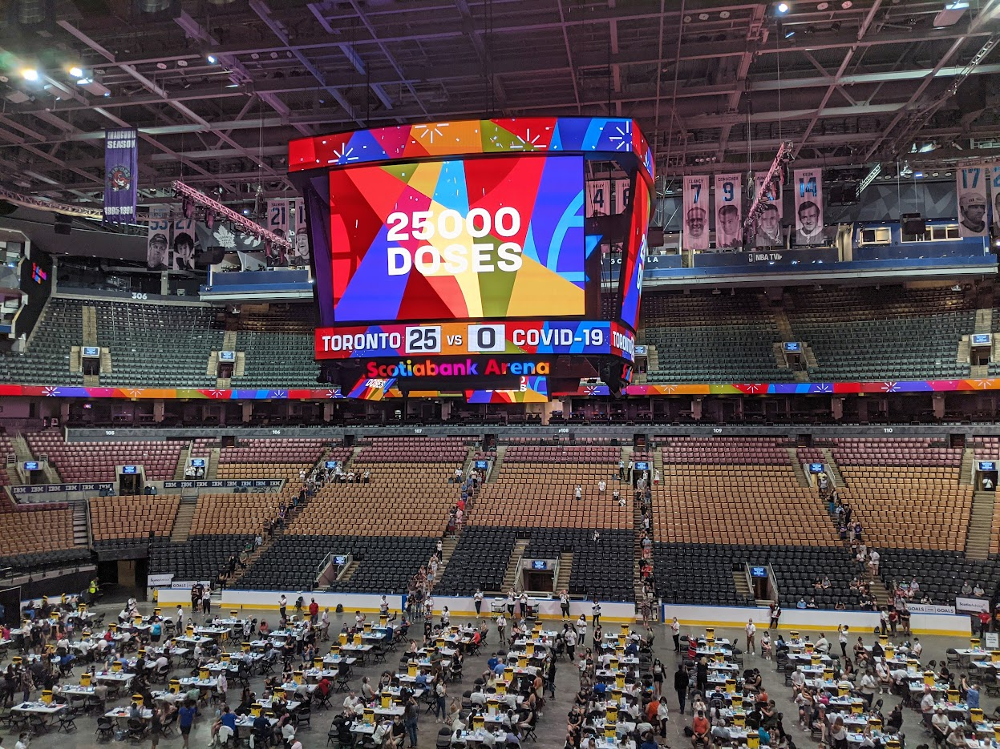
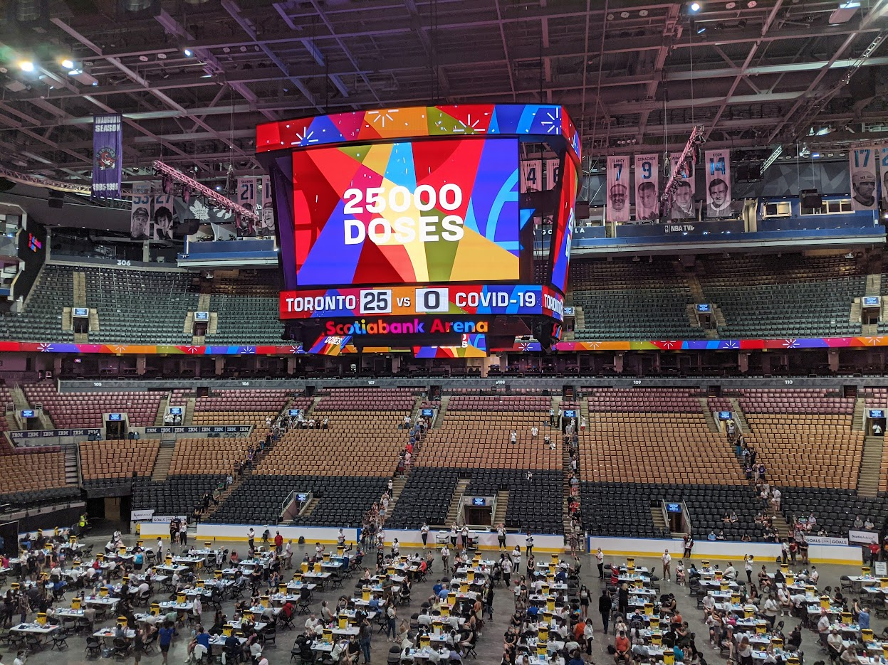
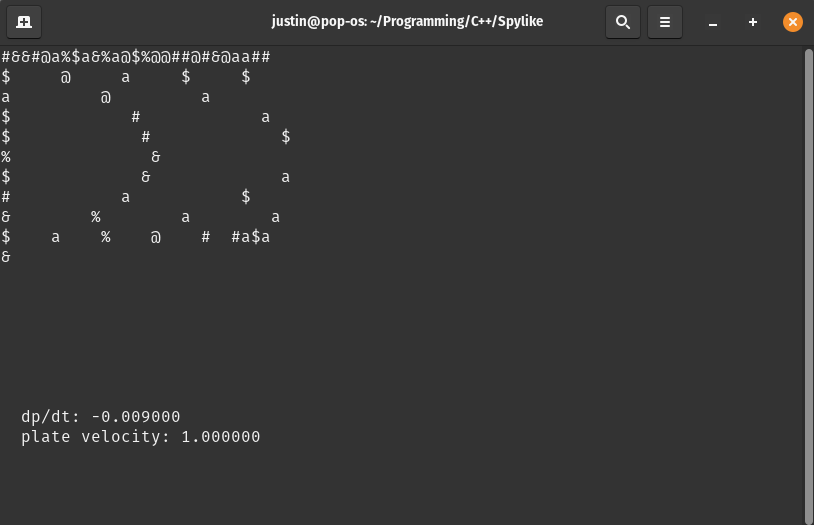
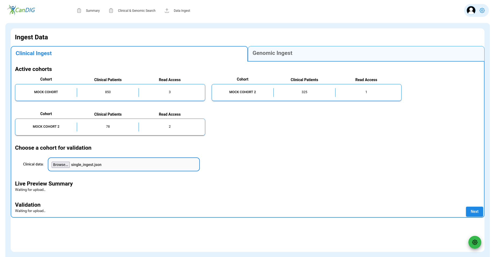
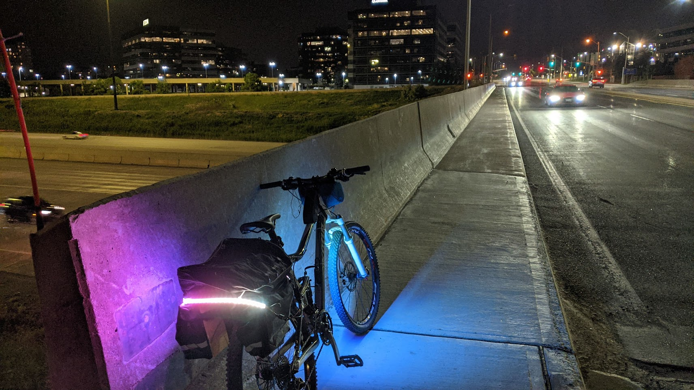
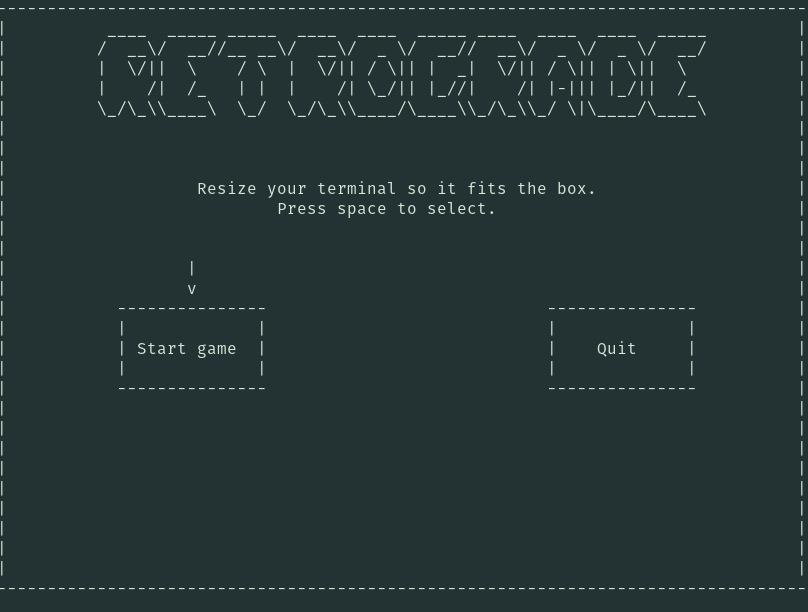
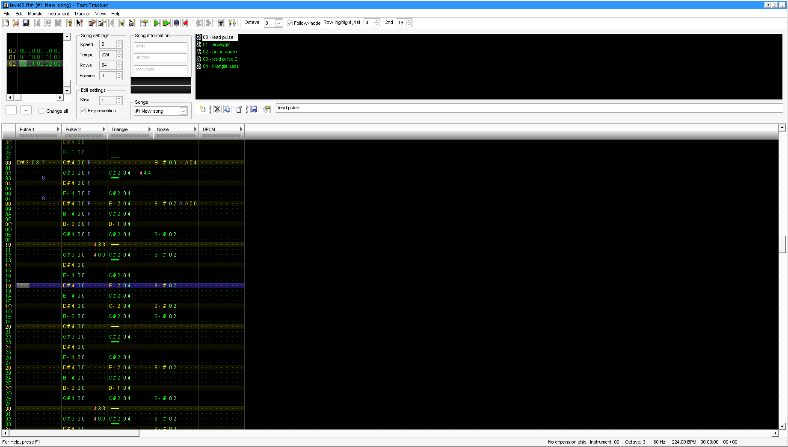
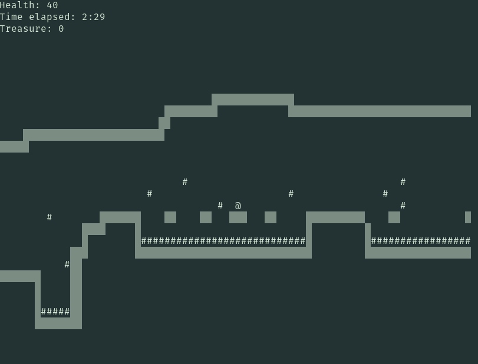

2018
2018 was my first real venture into software. As is the case with many early programmers, I mostly experimented with scripting and game development. I made a tool to extract every image post from the me_irl subreddit and display them in a video (at 60 posts shown per second and a a 2 hour and 48 minute runtime, this was no small dataset to handle! I had to deal with a lot of hiccups, including data loss, ffmpeg failures, and actually getting the thing onto Youtube). This year also brought my first complete major project...
ArchiveIt
A Reddit bot designed for internet preservation. Formatted existing Reddit posts into offline, locally storable formats including raw text and HTML (using the Python HTML templating library, Cheetah). Configurable to store archived posts on various different hosting platforms, from FTP to the free online hosting platform 0x0.st.

2019
r/ProgrammerHumor 2019 Hackathon
During 2019 I was a moderator of the r/ProgrammerHumor subreddit and co-hosted their Overengineering hackathon with over 50 competitors and thousands of dollars in sponsorships. The absurd theme and long timeframe (participants had around a month to cook up their submission) spawned some very interesting projects - we saw a functional IDE developed entirely in Discord, a captcha where you make the images, and full stack hello world. I personally oversaw the judging of the event as well as streamed entries to Twitch (that I could actually build and run...)
First ventures into audio
I also started to make music. You can listen to my first track here:
2020
Lighttype
A typing training tool built with PyQt5, because I didn't really like any of the ones online. My first major UI experience (besides a text editor I was also trying to build in PyQt5, but gave up on because it's really hard to distribute programs made in PyQt5). You can find it at:

2021
Find your Immunization
I was part of the Vaccine Hunters Canada team since its early days in March of 2020. It was a bittersweet time - the roll-out was chaotic, to say the least, and appointments were often not found through Ontario's system, but by word of mouth: "There's a pop-up clinic happening in this postal code at this time, here's a link to book it..." Vaccine Hunters started as more of a discussion board for people to share what they knew, but given the need the country had, it quickly spiralled into a huge operation with a team of volunteers finding appointments for people who needed vaccines constantly. The drive of some of our team members to get people appointments and wait without end on booking portal upon booking portal was inspiring, to say the least... I can't say I even compared with the top performers. I always jump at the chance to automate things when they can be automated, though, and I saw an opportunity here, so I proposed a web portal where users could find vaccination appointments for themselves. A lot of other developers saw potential for this idea, so we assembled a small team. I created a project outline and detailed our objectives for the early phases of the program, contacted data sources to see whether they would be alright with having their data scraped, and led our first few development meetings. I also kickstarted our FastAPI backend in Python. Eventually, I handed off leadership to two of our (very talented!) developers to focus on other real life obligations, but the project was a resounding success, with over a million users and recognition from the Prime Minister:
Throughout the pandemic, Canadians have stepped up – and the team at @VaxHuntersCan did so in a big way. Thank you for everything you’ve done to help get people vaccinated. And with enough doses for everyone, I know your website will help us finish the fight against COVID-19. https://t.co/HHcB0nFM7O
— Justin Trudeau (@JustinTrudeau) August 6, 2021
As a side note (maybe I should make this into a blog post when the blog is ready) I volunteered at some vaccine drives and clinics as well, including the Scotiabank clinic where we broke the world record for people vaccinated at a single pop up (25,000). It was actually a lot of fun - I got to document people's sociodemographic data using Salesforce, and got about 150 records done by the end of the evening.


VaxBot
While I ramped down from operations on FYI, I still had enough spare time to develop VaxBot, a Discord interface made in Python for FYI which delivered curated appointments based on your location and dosage number needed. I also connected it to Vaccine Ontario's database, another team with a similar objective to FYI with a larger data-set. This meant that our team could just redirect you to the channel if you wanted to find vaccination appointments in a certain postal code instead of looking themselves or having to go to the website This turned out to be very useful, as the bot racked up around 400 daily users at its peak and over 10,000 in total.

Vaccine Ontario
I also contributed to Vaccine Ontario's project while working on VaxBot - their database had some broken entries in several places that my bot identified, so I pointed them out to their team. I made web-scrapers for two sites they needed as well, adding hundreds of new appointments.
SCP Area 89
As I became more familiar with music creation, I was able to develop a full EP for my friend's Dungeons & Dragons game that took place in an SCP facility (the SCP foundation is a fictional universe that is worth reading about!). You can listen here:
2022
Couette Fluid Simulation (& Spylike)
I began developing a Pure C++ ASCII game engine using ncurses which is currently still in development, but it was very useful for my physics final project, which was a Couette Flow (very basic Navier Stokes simplifcation) simulator in a terminal.

BetterDubz
At HackHarvard 2022, our team of 3 made a mini-studio to automatically dub videos given audio with the wav2lip machine learning dubbing library. I made the PyQt5 front-end and the API for video processing, as well as handled some of the ffmpeg logic. I thought it was an interesting idea, at least. I'm thinking of continuing it on a larger scale in the future if time permits since I could definitely see it as a timesaver.
2023
UHN DATA - CanDIG
I interned on the CanDIG team at UHN this summer, which ended up being a lot of fun. My main project was their data ingest pipeline. CanDIG is a federated cancer research database storing clinical (think patient health history - age, date of birth, medical conditions...) and genomic (entire genomes) data; their stack had databases for both types of data ready-to-go, but there was no real way to go from raw researcher data, through their Extract Transform Load (ETL) process, into those databases. This is where I came in and developed a microservice with Docker that made the conversions necessary to actually get it there. The clinical data output from our ETL was nested, for instance, and I needed to flatten it into a different structure (which was unfortunately not always trivial due to ambiguous pieces in the data model we were using) so it could be put into our relational database. We also needed a new way to specify genomic data file locations and their related clinical data which I implemented. After that was done, I created a web UI using React so there was a user-friendly way for researchers to upload data. I was able to deliver a fully functioning demo of all this at our end-of-summer DATA tech demo. I did some DevOps and miscellaneous work on the side at the same time, including refactoring several microservices for a new authentication model, creating a GitHub Action that validated our entire stack (which immediately managed to find some long-standing configuration issues), and automatically creating pull requests on our main repository when sub-modules were updated.

RGBike
I wanted to do some late-night bike riding during the summer, so as a side project, I hooked up a programmable RGB LED strip to my bike and controlled it with an Arduino mounted at the front. An arcade button attached to the left handle (very precariously) allows one to change the light mode. It's powered with a LIPO battery at the back of the bike. I got through a very nice evening ride in Markham, Ontario equipped with it, without having to worry at all about cars not seeing me. Afterwards, it unfortunately sustained some damage, and so I'm now looking into developing a custom PCB with waterproof connectors to make it a lot more compact and durable.

This website
This website has been around since late 2022, but now it has a Portfolio page! I'm currently developing a blog in React as well so stay tuned for that.
Retrograde
Retrograde has been one of my most significant projects yet, taking up thousands of lines of C++ and months of effort.

It's a roguelike/platformer game built in a game engine made from scratch. Containing 11 levels, including a final boss, the demo is around 20-30 minutes of playtime total for a first run. I also composed a chiptune soundtrack in Famitracker, a "tracker" music editor which simulates real Nintendo NES hardware.

A lot of learning and technical effort was required to truly make a game from scratch. I implemented a graphics/rendering engine, communication through events, level loading, a tile-based entity system, and a lot more. I used Tiled to create the level maps by-hand and made an exporter for a custom file format that the game could use. The game has some extra challenges like collecting the most treasure and exploring some optional rooms. Overall I'm pretty happy to have released something playable!
